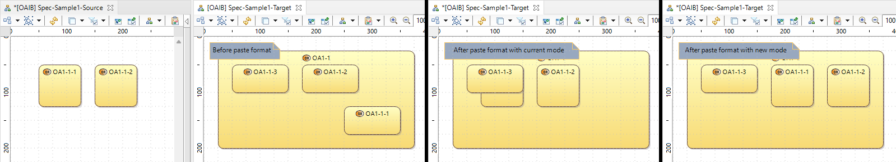
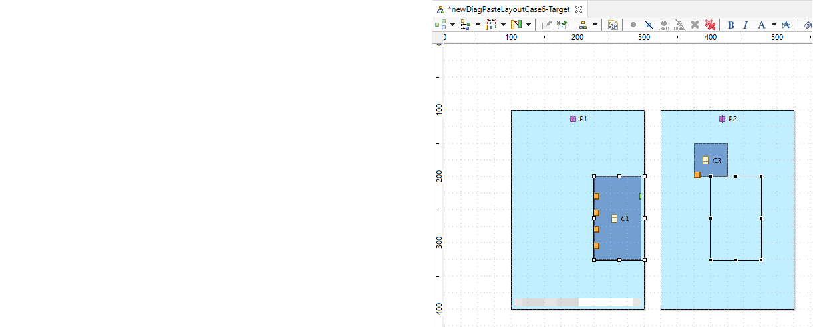

_Summary_: The goal of this evolution is to allow to choose between the current mode and a new mode when using the "Paste layout" or "Paste format" actions. This new mode keeps the same origin of the bounding box containing the elements having a copied layout to apply on.
A picture is worth a thousand words:

In the above example, in the new mode, the bounding box origin of
{175, 50} is kept. The layout is applied by considering this origin.
In the current mode, there is overlap with other existing nodes.
| Version | Status | Date | Authors | Changes | |---------|-----------|------------|-----------|-------------------| | v0.1 | PROPOSAL | 2022-11-24 | lredor | Initial version. | | v1.0 | ACCEPTED | 2022-12-13 | lredor | Initial version. |
Relevant tickets(links to the Bugzilla tickets which are related to the change):
After this evolution, a popup will appear after launching the "Paste format" or "Paste layout" action.
The user can select the desired paste mode:
{0, 0}).
In this popup, the user can check the box "Do not prompt to select paste mode, use last choice". If this box is checked, at the next execution of the "Paste" action, the popup will not be displayed and the last used mode will be used by default.
The user can modify this choice in the preferences:
Sirius/Sirius Diagram.
This new mode is used either in "Paste format" or "Paste layout". The result is the same in both action.
There are specific cases:
The next chapters details what is "the origin of the bounding box" and several cases with the expected behavior of the new mode.
Simple case
The bounding box of elements if a rectangle containing all these elements. And the origin of a bounding box is the coordinates of the top-left corner of this rectangle.
For example in the following diagram:

More complexe case
If the elements contain edges, labels of edges, border nodes, label of border nodes... The rule is always the same. The bounding box contains all these elements.
For example in the following diagram, the bounding box of all elements is the red rectangle.

The semantic model used is the following. The diagrams are unsynchronized and allow to represent packages and/or classes in one of its parents, in all parent hierarchy.

Case 1 - Standard case
If the "Copy format" is launched on classes "D" and "E", from "newDiagPasteLayoutCase1-Source" and the "Paste format" is done in "newDiagPasteLayoutCase1-Target1" with "Bounding box" mode,

the expected result is the following: no overlap with other classes and the origin of the bounding box of "D" and "E" remains the same.

Case 2 - Not same hierarchy and scrollbar
If the "Copy format" is launched on classes "D" and "E", from "newDiagPasteLayoutCase1-Source" and the "Paste format" is done in "newDiagPasteLayoutCase1-Target2" with "Bounding box" mode,

the expected result is the following: The origin of the bounding box of "D" and "E" remains the same. A scrollbar appears on "P11" because the class "E" overflows this container.

Case 3 - Scrollbar
If the "Copy format" is launched on classes "A" and "B", from "newDiagPasteLayoutCase2-Source" and the "Paste format" is done in "newDiagPasteLayoutCase2-Target" with "Bounding box" mode,
the expected result is the following: The origin of the bounding box of "A" and "B" remains the same. A scrollbar appears on "P11" because the class "B" overflows this container.
Case 4 - Layout data hierarchy
For the same situation that case 3, but with a "Copy format" launched on package "P11", class "A" and class "B" (selection of classes "A" and "B" is optional, ie the result is the same with only "P11" selected, because the "Copy" action copies the layout data of the children too), the expected result is the following: The origin of the bounding box of "P11" remains the same. The "bounding box" mode is not considered for children of element having a layout data to paste, so "A" and "B" are moved without considering the bounding box.

Case 5 - Layout data hierarchy broken
If the "Copy format" is launched on the diagram "newDiagPasteLayoutCase5-Source" and the "Paste format" is done in "newDiagPasteLayoutCase5-Target" with "Bounding box" mode,
the expected result is the following: The origin of the bounding box of "P1" remains the same. P1 is resized, causing scrollbars because "P11" is not concerned by the Paste (no layout date). The origin of the bounding box of "A" and "B" remains the same (no direct parent in the stored layout data).
Case 6 - Edge and border nodes
If the "Copy format" is launched on the diagram "newDiagPasteLayoutCase6-Source", with and the "Paste format" is done in "newDiagPasteLayoutCase6-Target" with "Bounding box" mode,

the expected result is the following: The origin of the bounding box of "C1", "C2", the edge and its labels remains the same.

This feature will exist only in Sirius RCP. Indeed, the current "Copy/Paste format" actions are not implemented in Sirius Web, so the new mode neither.
No migration is needed. The changes impact the UI and the result of Paste action.
There is no metamodel change necessary for this feature.
New API will be added concerning the preferences and their default values:
org.eclipse.sirius.diagram.ui.tools.api.preferences.SiriusDiagramUiPreferencesKeys.PREF_PROMPT_PASTE_MODE: A boolean preference to say if the paste mode must be prompt at each "Paste format" or "Paste layout" action.
org.eclipse.sirius.diagram.ui.tools.api.preferences.SiriusDiagramUiPreferencesKeys.PREF_PASTE_MODE_ABSOLUTE: A boolean preference for the paste mode, true for
Absolute mode, false for
Bounding box mode).
PREF_PROMPT_PASTE_MODE is true, this preference is used to pre-select the choice in the popup.
PREF_PROMPT_PASTE_MODE is false, this preference is used to automatically choose the Paste mode to apply.
As explained in "Introduction":
The New and Noteworthy documentation must be completed.
The chapter Copy/paste of format of Sirius documentation must be completed.
The cases described in "Several samples" can be used as manual tests.
The classes
org.eclipse.sirius.tests.swtbot.layout.ContainerAndNodeCopyPasteFormatTest and
org.eclipse.sirius.tests.swtbot.layout.EdgeCopyPasteFormatTest can be completed.
org.eclipse.sirius.tests.swtbot.clipboard.MultiSessionCopyPasteTest
org.eclipse.sirius.tests.swtbot.layout.BorderedNodeCopyPasteFormatTest
org.eclipse.sirius.tests.swtbot.layout.EdgeStabilityOnCopyPasteLayoutTest
org.eclipse.sirius.tests.swtbot.uml.CopyPasteFormatOfLabelOfBorderedNodeTest
org.eclipse.sirius.tests.swtbot.uml.CopyPasteLayoutOfPortsWithConflictWithNotPastedPortsTest
org.eclipse.sirius.tests.swtbot.uml.CopyPasteLayoutOfPortsWithConflictWithPastedPortsTest
There is no guarantee to cover specific cases not detailed in the "Detailed Specification".
Specific cases not currently covered by the current mode will not be covered by the new mode. For the same reasons, existing bugs in the current mode will not be fixed with the implementation of this new mode.